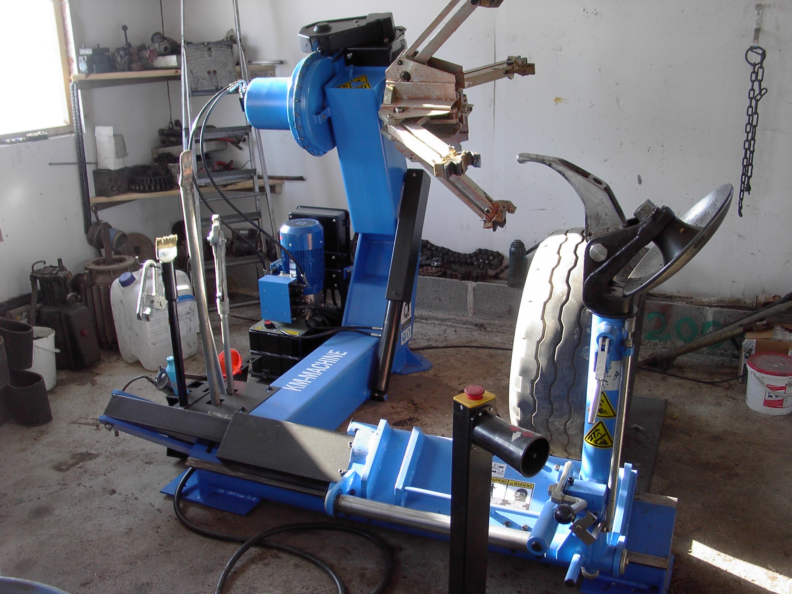
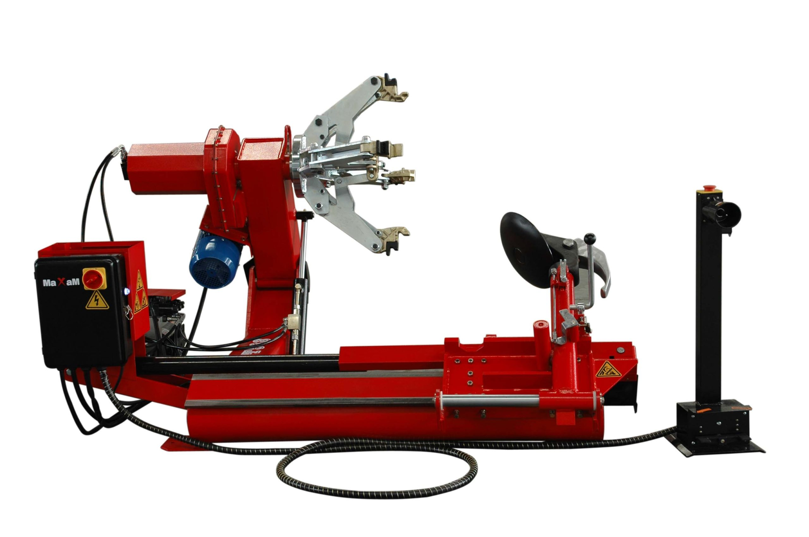
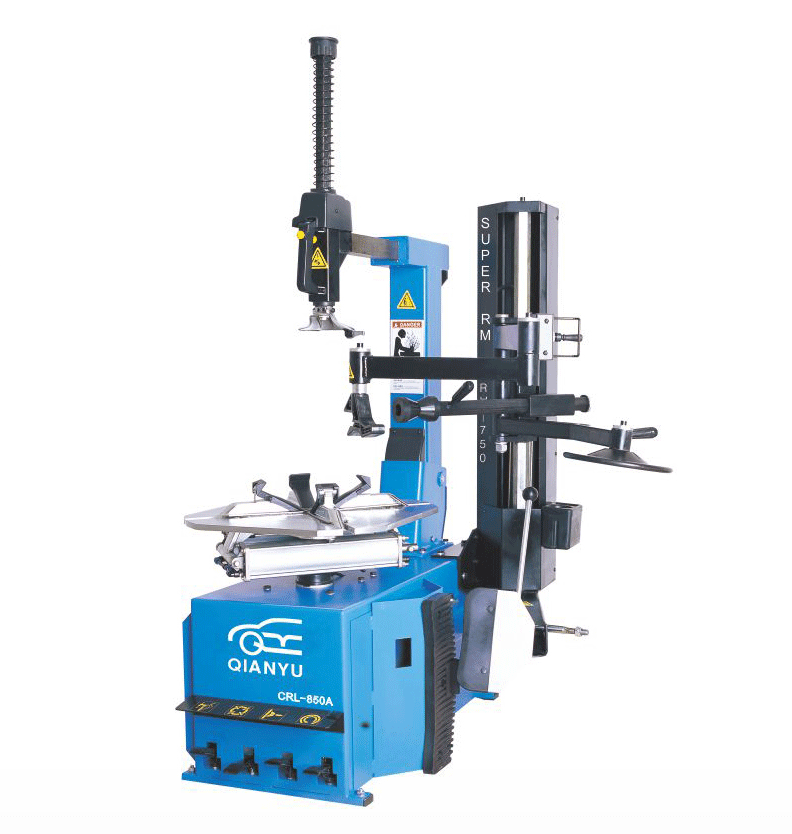
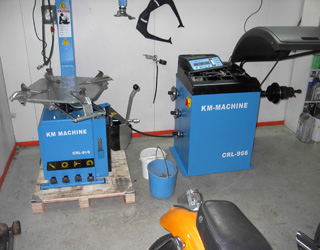
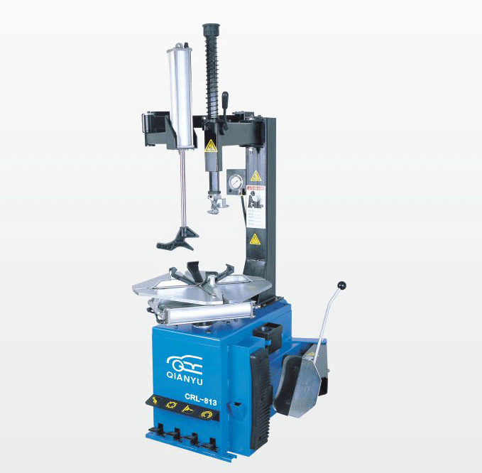
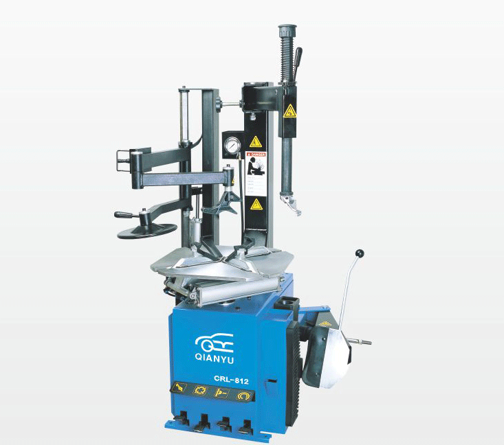
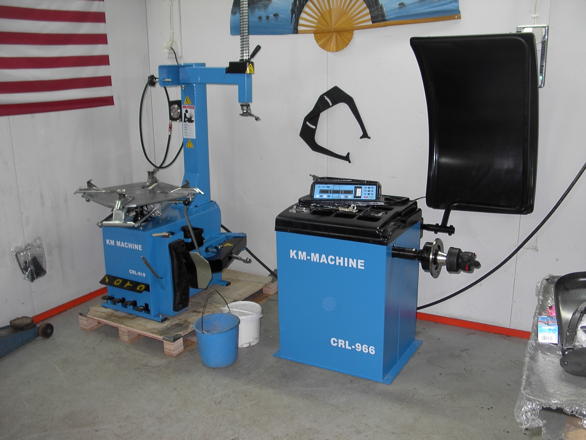
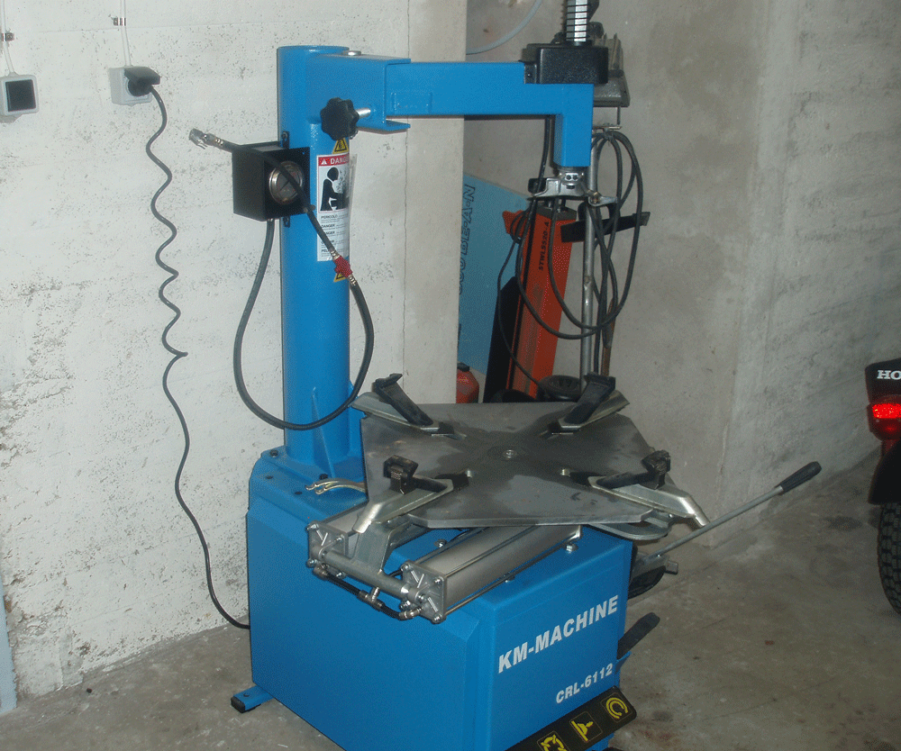

Raskaan kaluston rengaskone CRL-598
Ei saatavilla- Rengaskoot 14–42 tuumaa
- Maksimi renkaan leveys 1 065 mm
- Maksimi renkaan halkaisija 2 300 mm
- Maksimi renkaan paino 1 600 kg
- Teho 1,8 kW
- CE-hyväksytty
Mallistostamme löydätte rengaskoneet kaikkiin tarpeisiinne. CRL-810 ja CRL-6112 soveltuvat erinomaisesti peruskäyttöön. Raskaampaa kalustoa varten olemme valinneet tuotevalikoimaamme rengaskoneet CRL-568:n ja CRL-598:n. Tämän lisäksi valikoimassamme on tietysti myös erinomainen renkaiden tasapainotuskone CRL-966.








Hinta pyydettäessä — ota yhteyttä